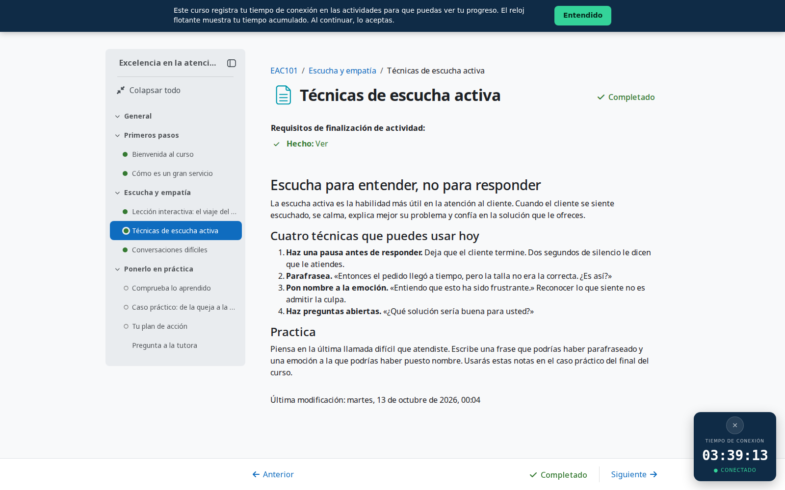
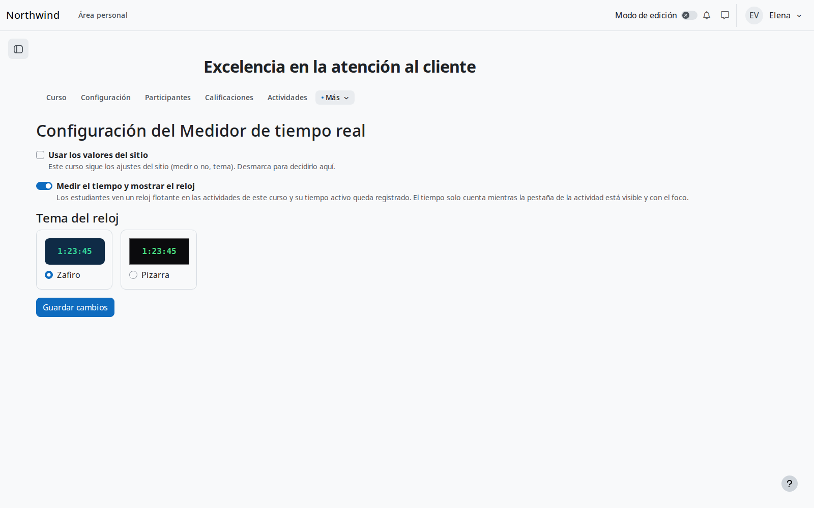

3Cómo mide el tiempo
El reloj empieza a contar cuando el estudiante abre una actividad y solo sigue contando mientras esa
pestaña está visible y con el foco.
| Cuenta | No cuenta |
|---|
| La actividad abierta y en primer plano, también con un vídeo reproduciéndose en ella (a propósito). |
La pestaña en segundo plano, la ventana minimizada o el estudiante en otra aplicación. |
| Los paquetes SCORM, también los que se abren en una ventana nueva. |
Los saltos de reloj, por ejemplo con el equipo suspendido: se recortan. |
Los estudiantes del curso (permiso local/eftimeclock:recordtime). |
El profesorado, los gestores y los administradores: no ven el reloj y no se les mide nada,
aunque además estén matriculados como estudiantes. |
Comprobación en el servidor
Cada visita lleva su propio identificador y el guardado nunca duplica, ni siquiera con conexiones
inestables. Además, el servidor solo acepta los segundos que de verdad han pasado desde el guardado
anterior de ese estudiante: ni una llamada manipulada, ni repetir un envío, ni dos dispositivos a la vez
inflan el total. Ante la duda, mide de menos.
El aviso de transparencia
La primera vez que el estudiante entra en una actividad ve una franja que le explica que su tiempo se
mide y que el reloj le enseña su tiempo acumulado. Al pulsar Entendido no vuelve a salir. Se puede
desactivar para todo el sitio.

El aviso, arriba, una sola vez por estudiante. El reloj ya está contando abajo a la derecha.
6Ajustes del curso y del sitio
En cada curso
En el curso: Más → Configuración del Medidor de tiempo real.

Arriba, «Usar los valores del sitio» y el interruptor de medición; debajo, la galería de
temas: Zafiro o Pizarra.
| Ajuste | Qué hace |
|---|
| Usar los valores del sitio | El curso sigue siempre lo que diga el sitio (medir o no y tema). Desmárcalo para decidirlo en este curso. |
| Medir el tiempo y mostrar el reloj | Enciende o apaga la medición en este curso. |
| Tema del reloj | Zafiro o Pizarra. |
Para todo el sitio
En Administración del sitio → Extensiones → Complementos locales → Medidor de tiempo real:
| Ajuste | De serie | Qué hace |
|---|
| Medir el tiempo por defecto | Sí | Si los cursos miden el tiempo y muestran el reloj. Cada curso puede cambiarlo. |
| Tema del reloj por defecto | Zafiro | El tema de los cursos sin ajuste propio. |
| Mostrar el aviso de medición | Sí | El aviso de transparencia que ve cada estudiante una sola vez. |
7Permisos y datos
| Permiso | De serie lo tiene | Qué permite |
|---|
local/eftimeclock:viewreport | Profesor, profesor con permiso de edición, gestor |
Ver el informe y descargarlo. Concédeselo también a un rol de auditor de solo lectura si lo usas.
Quien lo tiene queda fuera de la medición. |
local/eftimeclock:manage | Profesor con permiso de edición, gestor |
Cambiar los ajustes del curso. |
local/eftimeclock:recordtime | Estudiante |
Que se le mida el tiempo. |
- Copia de seguridad del curso: los ajustes del medidor viajan siempre; el tiempo medido, solo
si marcas «Incluir usuarios matriculados». Restaurar dos veces no duplica.
- Reiniciar el curso dando de baja a los estudiantes borra su tiempo medido: una edición nueva
empieza de cero. Los ajustes se conservan. Descarga antes el informe si lo necesitas.
- Borrar el curso borra con él su tiempo medido y sus ajustes; la confirmación avisa si hay
tiempo guardado.
- Privacidad (RGPD): el plugin declara qué guarda y permite exportar y borrar los datos de cada
persona con las herramientas de privacidad de Moodle™.
8Qué no hace
Es un medidor gratuito y honesto. Para que no haya sorpresas, esto es lo que no hace:
- No mide la página principal del curso: solo las actividades.
- No mide el tiempo en segundo plano: vídeos o recursos externos abiertos en otra pestaña,
ni videoconferencias.
- No calcula el porcentaje sobre las horas del curso ni da detalle por actividad.
- No genera informes en PDF ni filtra por fechas, grupos o actividades.
- No incluye control de inactividad ni finalización de actividades por tiempo.
Todo eso lo hace el Pack Formación Bonificada Pro (apartado 9). Software libre (GPL v3), sin
llamadas externas ni recursos de terceros, con pruebas automáticas y revisión de código en cada versión.
9Pasar al Pack Formación Bonificada Pro sin perder datos
El reloj te dice cuánto tiempo dedican tus estudiantes. El Pack Formación Bonificada Pro de
eLearning Fácil te lo deja demostrado ante una auditoría: porcentaje sobre las horas comunicadas,
detalle por actividad, tiempo en segundo plano (vídeos, recursos externos y videoconferencia),
finalización por tiempo, el bloque de progreso del estudiante, informes en PDF y el expediente del curso
para la inspección de FUNDAE®.
Empezar gratis no te cuesta datos
Al instalar el Pack en un sitio que usa este medidor,
importa todo el tiempo ya medido y el
Medidor de tiempo real
se aparta solo: deja de mostrar el reloj y de registrar, y sus páginas lo
indican. Así hay un único reloj y una única medición.
Más información en elearningfacil.com/pack-fundae-moodle.
10Preguntas frecuentes
¿El estudiante puede parar el reloj?
Puede minimizarlo, pero la medición sigue las mismas reglas: cuenta solo con la actividad visible y con
el foco. Minimizarlo no cambia nada.
Un profesor no ve el reloj
Es lo esperado: quien puede ver el informe, y los administradores, no se miden. Para ver lo mismo que
el estudiante, entra con una cuenta de estudiante de prueba.
¿Por qué no sale el reloj en la página principal del curso?
La versión gratuita mide solo las actividades. La medición de la página principal es del Pack.
Tengo el Pack instalado y el reloj gratuito no sale
Es lo esperado: con el Pack presente, este plugin se aparta solo para que haya una única medición.
¿Los datos sirven para una auditoría de formación bonificada?
El registro es honesto y no duplica, pero una auditoría suele pedir más: porcentaje sobre las horas
comunicadas, evidencias por actividad, comunicaciones con el tutor… Eso es el Pack Formación Bonificada Pro.
El tiempo de un vídeo en otra pestaña no suma
Es a propósito: si la pestaña de la actividad no está activa, no cuenta. Un vídeo dentro de la propia
actividad, con la pestaña delante, sí suma.